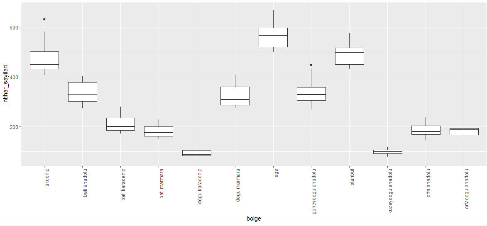

Code or Die
Projemizle ilgili güncellemelerden haberdar olmak için bu alanı takip edin.
Proje Genel Bakış ve Kapsamı
İntihar psikolojik, sosyal, genetik ve biyolojik oluşumların birleşimi sonucunda ortaya çıkar. Depresyon, anksiyete, ruhsal problemler, travmatik yaşam olayları, madde bağımlılığı, aile içi çatışmalar, sosyal izolasyon ve ekonomik zorluklar gibi pek çok unsur intiharın oluşmasında etken olabilir.
Bu projede 2013-2022 yılları arasında Türkiye’de yaşanan intihar oranları kadın-erkek, intihar sebepleri ve sayıları üzerinden bölge bölge incelenmiştir. Veriler İstanbul, Batı Marmara, Ege, Doğu Marmara, Batı Anadolu, Akdeniz, Orta Anadolu, Batı Karadeniz, Doğu Karadeniz, Kuzeydoğu Anadolu, Ortadoğu Anadolu ve Güneydoğu Anadolu bölgelerinden elde edilen sonuçlarla oluşturulmuştur.
Tercih Sebebi
Biz kod yazamadığımız için intihar ediyoruz, peki Türkiye’de insanlar neden intihar ediyor? Biz projemizde bunu inceliyoruz.
Veri Kaynağı
Veriler Türkiye İstatistik Kurumu’ndan alınmıştır.
TÜİK. (2023, Şubat). Ölüm ve Ölüm Nedeni İstatistikleri, 2021. TÜİK Veri Portalı. Erişim Adresi: https://data.tuik.gov.tr/Bulten/Index?p=Olum-ve-Olum-Nedeni-Istatistikleri-2021-45715
Veri Hakkında Genel Bilgiler
TÜİK araştırmalarından elde edilen verilerle toplamda 3 farklı veri seti oluşturduk. Bu veri setleri, 2013-2022 yılları arasında Türkiye genelinde toplam 9 farklı bölge ve metropol olan İstanbul’u ayrı incelediğimiz, toplamda 10 değişken içeren veri setlerini içermektedir. Bu veri setlerini ayrıca cinsiyet ayrımı yaparak 2 grupta inceledik. Son olarak, bu 10 yıl içindeki intiharların sebeplerini derlediğimiz bir veri seti oluşturduk:
Analiz
TÜİK’ten aldığımız 2013-2022 yılları arası Türkiye’nin bölgelere ve cinsiyetlere göre yıllık intihar sayıları üzerine yaptığımız analiz çalışmasına dair bulguları aşağıda bulabilirsiniz.
Grafik 1 : Yıllara Göre Toplam İntihar Sayısı

Türkiye’deki senelik genel intihar sayılarına bakıldığında intihar sayıları 2019 yılına kadar nispeten düşük ve istikrarlı bir seviyede ilerlemiştir. Ancak 2019 yılından itibaren bir artış gözlemlenmiş ve bu eğilim 2021’e kadar devam etmiştir. Bu durumun sebebi 2018’den beri Türkiye’deki ekonomik şartların gidişatıyla birlikte pandeminin etkisinin insanlar üzerindeki yansıması olduğu düşünülmektedir.
Grafik 2 : Yıllara Göre Kadın - Erkek Toplam İntihar Sayısı

Yıllık intihar sayıları kadın ve erkekler arasında kıyaslandığında 2019 yılında kadar erkeklerin kadınlara göre 2.5 kat daha fazla intihar ettiği gözlemlenmiştir. Bu oran 2020 yılından sonra yaklaşık 3’e çıkmıştır.
Grafik 3 : Sebeplerine Göre Yıllık İntihar Sayısı

Sebeplerine göre yıllık intihar sayıları incelendiğinde, öncelikle “Bilinmeyen” sebep grubunun azaldığı, yani yıllar ilerledikçe daha fazla data toplandığı göze çarpmaktadır. Bunun yanı sıra diğer intihar nedenleri benzer bir dağılım göstermekle birlikte, genel olarak “diğer”, “hastalık”, ve “geçim sıkıntısı” nedenleri ilk sırada bulunmaktadır. “Hastalık” nedeniyle intihar sayısının 2020 Covid salgını ile birlikte arttığı görülmektedir. Bunun yanı sıra, “öğrenim başarısızlığı” nedeniyle gerçekleşen intiharlar ilk yıllarda azalış gösterse de son yıllarda artmış, bunun nedeninin ise yıl geçtikçe artan enflasyon ve ekonomik zorluklar sonucu oluşan gelecek kaygısı olabileceği düşünülmektedir. “Ticari başarısızlık” nedeniyle gerçekleşen intihar sayısının ise ilk yıllarda azalırken son yıllarda sabit olduğu görülmektedir.
Sonuçlar ve Ana Çıkarımlar
Grafik 4 : Türkiye Nüfusuna Göre İntihar Yoğunluğu
